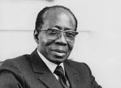
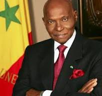
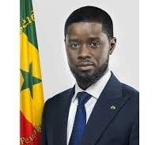

Présidents du Sénégal : 60 ans de leadership et de transitions
Le Sénégal a connu plusieurs présidents depuis son indépendance en 1960. Chacun d’eux a marqué l’histoire du pays par ses réformes et son style de gouvernance. Léopold Sédar Senghor (1960-1980) fut le premier président du Sénégal et l’un des pères du panafricanisme. Poète et intellectuel, il a posé les bases de la nation sénégalaise avant de céder volontairement le pouvoir à Abdou Diouf (1981-2000), qui a poursuivi une politique de stabilité et d’ouverture démocratique. En 2000, Abdoulaye Wade (2000-2012) met fin à 40 ans de règne socialiste et apporte plusieurs réformes économiques et infrastructurelles. Cependant, son second mandat est marqué par des contestations. Macky Sall (2012-2024) lui succède, mettant en place des projets ambitieux comme le Plan Sénégal Émergent (PSE) pour moderniser le pays. Son second mandat a également suscité des débats sur la démocratie et la gouvernance. En 2024, une nouvelle page de l’histoire sénégalaise s’ouvre avec Bassirou Diomaye Faye, premier président élu dès le premier tour et symbole d’un changement politique attendu par une grande partie de la population.
Léopold Sédar Senghor (1960 - 1980)
Le père de la nation sénégalaise et poète-président
Léopold Sédar Senghor est né le 9 octobre 1906 à Joal, une ville côtière du Sénégal. Issu d'une famille sérère catholique, il fait ses études au Sénégal avant de partir en France, où il devient agrégé de grammaire en 1935. Il est le premier Africain à obtenir ce titre prestigieux. Senghor est également un homme de lettres et un fervent défenseur de la négritude, un mouvement intellectuel qu’il fonde avec Aimé Césaire et Léon-Gontran Damas pour valoriser les cultures africaines. Sur le plan politique, il milite d’abord en France avant de revenir au Sénégal et de s’impliquer dans la vie politique locale. Il devient député à l’Assemblée nationale française et joue un rôle clé dans les négociations pour l’indépendance du Sénégal, obtenue le 20 août 1960. En tant que président, il met en place un État fort et centralisé, favorisant une économie mixte et une politique de développement axée sur l’éducation et la culture. Son mandat est marqué par un régime socialiste et une politique de modernisation du pays. En 1980, il surprend en démissionnant volontairement du pouvoir, devenant l'un des premiers dirigeants africains à céder pacifiquement sa place. Il se retire en France et meurt le 20 décembre 2001 à Verson.
Abdou Diouf (1981 - 2000)
L’homme du dialogue et de la stabilité
Abdou Diouf est né le 7 septembre 1935 à Louga. Après des études en droit et en administration à l’Institut d’études politiques de Dakar, puis à l’École nationale de la France d'outre-mer, il rejoint l’administration sénégalaise où il gravit rapidement les échelons. Il devient Premier ministre en 1970, sous la présidence de Senghor, et lui succède lorsque ce dernier démissionne en 1981. Son style de gouvernance est plus libéral et ouvert au multipartisme, contrairement à Senghor qui avait instauré un régime à parti unique. Sous sa présidence, le Sénégal connaît une transition démocratique progressive et une ouverture économique. Cependant, les difficultés économiques et sociales persistent, et son régime est contesté dans les années 1990. En 2000, il perd l’élection présidentielle face à Abdoulaye Wade, marquant ainsi la première alternance démocratique du pays. Après son départ, il devient Secrétaire général de l’Organisation internationale de la Francophonie (OIF) de 2003 à 2014.
Abdoulaye Wade (2000 - 2012)
Le combattant de l’opposition devenu président
Né le 29 mai 1926 à Kébémer, Abdoulaye Wade est un avocat et économiste qui a étudié en France, où il obtient plusieurs diplômes en droit et en économie. Il fonde le Parti Démocratique Sénégalais (PDS) en 1974 et devient le principal opposant au régime socialiste de Senghor et Diouf. Pendant près de 26 ans, il se bat pour l’alternance politique, participant à plusieurs élections avant de finalement remporter la présidentielle de 2000. Son mandat est marqué par une volonté de moderniser le pays avec de grands projets d’infrastructure, comme l’autoroute à péage Dakar-Diamniadio, l’aéroport international Blaise-Diagne et la statue de la Renaissance africaine. Il lance aussi le Plan Omega, visant à attirer des investissements étrangers. Toutefois, sa présidence est ternie par des accusations de mauvaise gestion et de népotisme, notamment avec l’ascension politique de son fils, Karim Wade. Son projet de se présenter pour un troisième mandat en 2012 provoque de fortes contestations populaires. Il perd finalement l’élection face à Macky Sall et se retire de la vie politique sénégalaise.
Macky Sall (2012 - 2024)
L’homme du Plan Sénégal Émergent (PSE)
Macky Sall est né le 11 décembre 1961 à Fatick. Ingénieur géologue de formation, il commence sa carrière politique au sein du PDS d’Abdoulaye Wade, où il occupe plusieurs postes ministériels avant de devenir Premier ministre en 2004. Il est ensuite élu président de l’Assemblée nationale en 2007, mais entre en conflit avec Wade, qui tente de l’écarter. Il quitte alors le PDS et fonde son propre parti, l’Alliance pour la République (APR). En 2012, il bat Wade au second tour avec plus de 65% des voix et devient le quatrième président du Sénégal. Son premier mandat est marqué par des réformes économiques ambitieuses sous le Plan Sénégal Émergent (PSE), visant à moderniser l’économie, l’agriculture, les infrastructures et le secteur énergétique. Réélu en 2019, son second mandat est plus controversé, notamment en raison des tensions politiques, des accusations de répression de l’opposition et du report de l’élection présidentielle de 2024. Il renonce finalement à briguer un troisième mandat, respectant ainsi la Constitution.
Bassirou Diomaye Faye (2024 - présent)
Le président de la rupture
Bassirou Diomaye Faye est né en 1980 à Ndiaganiao. Inspecteur des impôts de formation, il est un proche d’Ousmane Sonko, leader du parti PASTEF. Il se fait connaître pour ses positions radicales en faveur de la souveraineté économique et de la lutte contre la corruption. Incarcéré pour des motifs politiques en 2023, il est libéré quelques jours avant l’élection présidentielle de 2024, qu’il remporte dès le premier tour avec un score historique, devenant ainsi le plus jeune président de l’histoire du Sénégal. Son programme met l’accent sur la justice sociale, la transparence et la refonte des institutions. Il incarne l’espoir d’un changement profond pour de nombreux Sénégalais qui aspirent à une gouvernance plus équitable et indépendante.
Du passé au futur: Le Sénégal en marche
Depuis son indépendance, le Sénégal a connu une évolution démocratique remarquable, avec des transitions pacifiques entre ses présidents. De Senghor à Diomaye Faye, chaque chef d’État a apporté sa vision et ses réformes, contribuant à faire du Sénégal un pays stable en Afrique de l’Ouest. L’avenir dira comment cette dynamique évoluera sous la nouvelle présidence.Bassirou Diomaye Faye (2024 - présent)